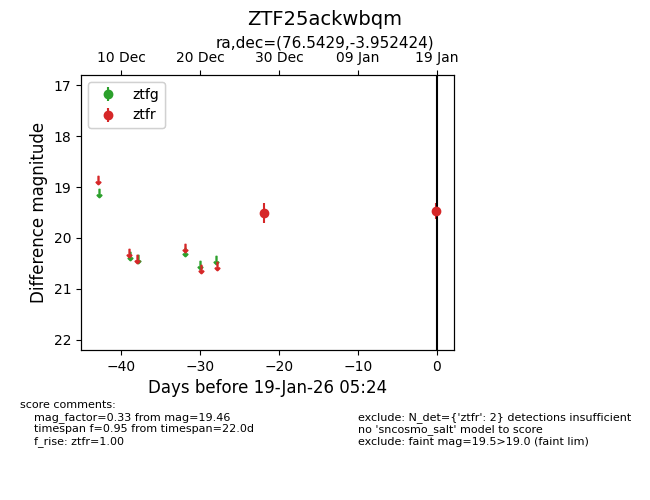
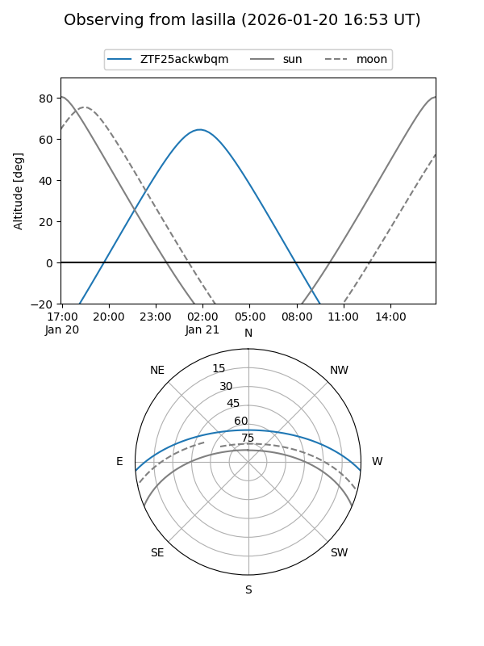
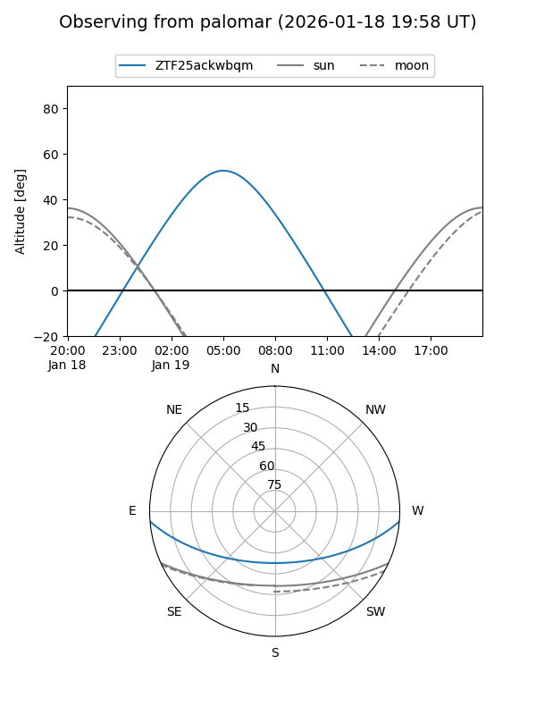

ZTF25ackwbqm
Target ZTF25ackwbqm at 2026-01-21 05:26
Aliases and brokers:
FINK: link
Lasair: link
ALeRCE: link
alt names
ZTF25ackwbqm (ztf,fink_ztf)
Coordinates:
equatorial (ra, dec) = 76.5429,-3.95242
equatorial (HMS+DMS) = 05:06:10.29,-03:57:08.73
galactic (l, b) = (204.0136,-25.15391)
Flags:
Photometry:
last ztfr=19.46
2 ztfr detections
Lightcurve

Visibility


Additional plots